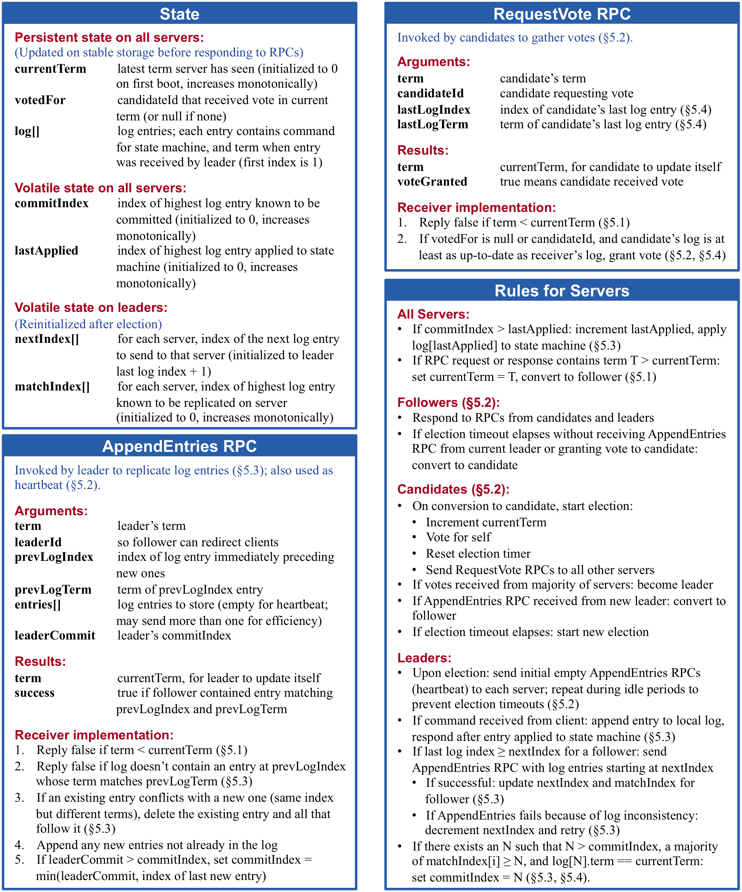
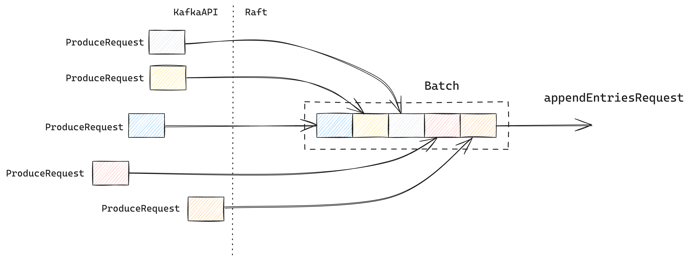

Raft made live in Redpanda
Agenda
Raft fundamentals
- What is Raft
- How it works
Story of Raft in Redpanda
- Multiple Raft Groups
- Reconfiguration
- Performance
Michał Maślanka
Software Engineer in Redpanda Data
@MaslankaMichal
michal@redpanda.com

What is Raft ?
Number of Raft replicas
\[ \begin{aligned} R = 2f+1 \end{aligned} \]$f$ - number of crash failures
Majority
\[\begin{aligned} M = \lfloor \frac{R}{2} \rfloor + 1 \end{aligned} \]$R$ - number of replicas
Leader election
Replication
Failure Detector
Redpanda

Thread per core architecture
Raft protocol summary
Source: In Search of an
Understandable Consensus Algorithm (D. Ongaro and J. Ousterhout)
Redpanda Raft
Redpanda Topic
Heartbeats in numbers
\[
\begin{align*}
p &= 30000 \text{ partitions}\\
\end{align*}
\]
\[
\begin{align*}
H &= 60000 \text{ heartbeats}\\
\end{align*}
\]
\[
\begin{align*}
H_{rate} &= 400000 \text{ rps} \\
\end{align*}
\]
Heartbeats Manager
Overwhelmed by scale
Lightweight heartbeats
Source: In Search of an
Understandable Consensus Algorithm (D. Ongaro and J. Ousterhout)
Lightweight heartbeat
Lightweight heartbeat
Raft recovery
Offline
Back operational
Raft recovery - thundering heard problem
Coordinated recovery
Coordinated recovery

Learner replicas
Reconfiguration - joint consensus

Joint consensus - availability issue
Joint consensus - availability issue
Joint consensus - new approach
Raft snapshots
Tiered storage
Tiered storage reconfiguration
Fast reconfiguration


Batching
Pipelining
Key Takeaways
Raft protocol a cornerstone of Redpanda
Raft protocol is well described and relatively easy to understand
It is a long way from research to real life implementation
Ideas to consider when building distributed systems
Creating distributed systems is hard but exciting
Thank you for your attention